Table Of Content
Spesifikasi Minimal Untuk Smartphone Android
Spesifikasi Minimal Untuk iPhone/iPod
iLabuhanbatu: Reading Socially iLabuhanbatu adalah sebuah platform media sosial untuk mengakses e-Bookstore & e-Pustaka, membangun jaringan/komunitas sesama pembaca, dan juga tentunya sebagai e-Reader untuk membaca eBook. iLabuhanbatu dapat diakses di berbagai medium perangkat mulai dari desktop dan PC berbasis situs (web-based), netbook dan tab based hybrid (tab-base application), dan mobile (smartphone-based application).
Software Requirement
Agar iLabuhanbatu dapat berjalan dengan baik maka diperlukan spesifikasi yang sesuai. Spesifikasi minimal adalah:
Spesifikasi Minimal Untuk Android
1. 4.0 and up
2. 1 GB of RAM
3. 4-inch display size
Spesifikasi Minimal Untuk iPhone/iPod
- Required iOS 7.0 or later
- Optimized for iPhone 5
- Compatible for iPhone and iPod Touch
Feature
|
Dibawah ini adalah welcome screen iLabuhanbatu setelah melakukan instalasi iLabuhanbatu di smartphone. |
|
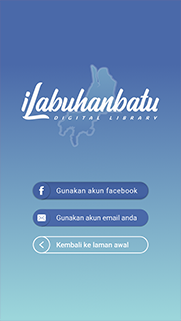
Connect With Facebook
Connect with Facebook merupakan fitur yang digunakan untuk masuk atau mendaftarkan akun facebook anda dalam hal ini adalah email yang terdaftar dalam facebook untuk digunakan mendaftar di aplikasi iLabuhanbatu menggunakan akun Facebook tersebut.
Connect with Email
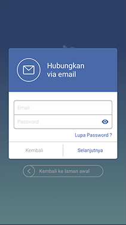
Connect with Email merupakan fitur yang digunakan untuk masuk ke dalam aplikasi iLabuhanbatu menggunakan alamat Email. Di bawah ini adalah langkah - langkahnya :
Registrasi / Sign up
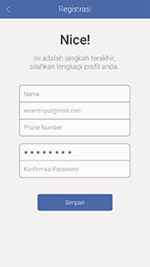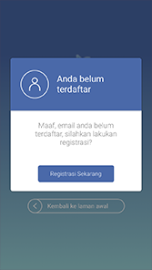
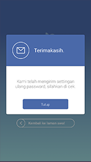
Untuk memulai menggunakan aplikasi iLabuhanbatu ini, terlebih dahulu melakukan langkah seperti diatas, jika belum terdaftar dalam aplikasi iLabuhanbatu maka langkah selanjutnya setelah menekan tombol connect with facebook dan connect with email maka setelah itu masuk form registrasi.
Forgot Password
Forgot Password merupakan fitur yang digunakan jika user mengalami lupa akan passwordnya. Cukup mudah menggunakan fitur ini, user hanya disuruh untuk memasukkan email yang sudah terdaftar pada iLabuhanbatu. setelah itu akan ada email dari noreply@aksaramaya.com yang berisi tentang reset password.
Dashboard
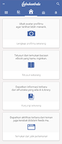 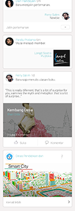
Dashboard terdiri dari beberapa fitur didalamnya antara lain profile, notification, balance, status badges, book to finish, list followers, list following.
Profile Setting
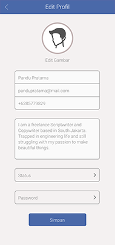
Profile Setting merupakan pengaturan akun profile. Beberapa pengaturan antara lain, avatar, username, email address, live in, password, biografi.
Edit Photo
Edit Photo digunakan untuk mengubah Photo profile
Edit Password
Change Password digunakan untuk mengubah password lama dengan yang baru.
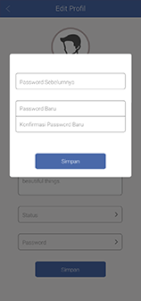
Notification
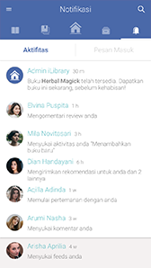
Notifikasi merupakan informasi pemberitahuan yang bersifat pribadi, informasi pemberitahuan yang akan masuk kedalam notifikasi adalah :
- Comment
- Share-Recommend
- New Follower
- Status Badges
- Message
- Like Comment
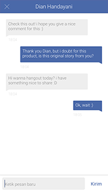
Inbox merupakan fitur yang
digunakan untuk melakukan percakapan dengan user lain. Untuk memulai percakapan
dengan user yang belum pernah chat, bisa dilakukan dengan cara masuk ke user
profile yang akan di ajak chat. klik tombol chat( )
yang ada di sebelah kanan atas User Profile, maka akan masuk ke halaman chat.
)
yang ada di sebelah kanan atas User Profile, maka akan masuk ke halaman chat.
Status Badges
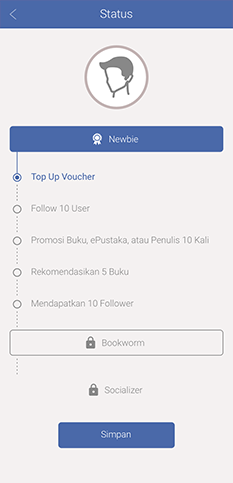
Status Badges merupakan level baca user , ada beberapa level baca di iLabuhanbatu yaitu Newbie, Bookworm, dan Socializer.
Jika ingin naik level maka user harus memenuhi beberapa persyaratan,
Newbie to Bookworm
- Complete Profile
- Posted > 5 Comments
- Download 10 books to shelf
- Open/Read 5 Books
- Topped Up Voucher
Bookworm to Socializer
- Follow 10 People
- Share 10 Times
- Recommend 5 Books
- Get 10 Followers
Book to Finish
Book to Finish merupakan kumpulan buku-buku yang telah dimiliki. Di dalam book to finish terdapat informasi persentase baca buku, serta batas akhir pinjam buku (bila buku tersebut dipinjam dari ePustaka dan rental di store)
List Followers/Following
List Followers/Following merupakan daftar user yang sudah mengikuti anda atau yang anda ikuti.
 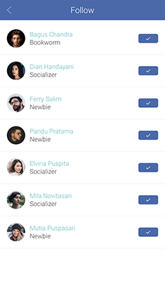
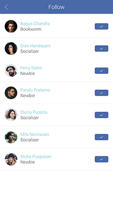
Store
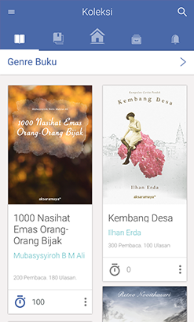
Library merupakan katalog buku serta berperan sebagai store dalam iLabuhanbatu. Library terdiri dari beberapa fitur seperti kategori, search book, recommended book.
- Search Book
Search book digunakan untuk melakukan pencarian buku. Untuk melakukan pencarian, silakan masukkan kata kunci dari buku yang ingin dicari misal : buku yang dicari dengan kata kunci "fisika". Berikut tampilan setelah dilakukan pencarian dengan kata kunci "fisika".
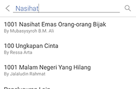 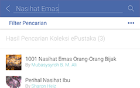
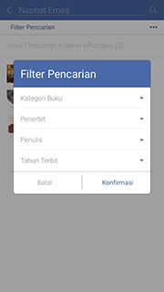 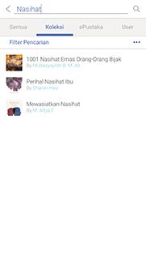
Books Category
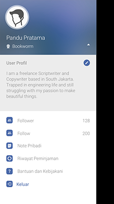
Untuk mencari buku berdasarkan kategorinya, klik salah satu kategori yang ada di samping kiri. Terdapat kategori buku umum, magazine, dan komik
ePustaka
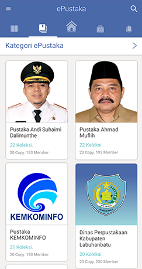 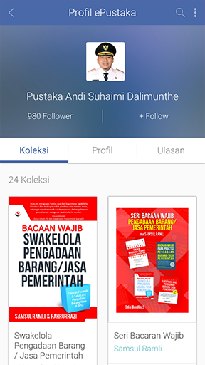
ePustaka merupakan kumpulan instansi atau penerbit yang sudah bekerjasama dengan iLabuhanbatu. Perhatikan gambar diatas, didalam halaman ePustaka, terdapat beberapa list penerbit/instansi yang sudah bekerjasama. Untuk masuk ke halaman ePustaka silakan pilih tab "ePustaka" yang ada di library.
Silakan pilih salah satu ePustaka misalkan : Pustakamaya , setelah itu akan muncul detail ePustaka yang didalamnya terdapat beberapa fitur seperti Follow ePustaka, List Book, List Followers, List Comment, Join ePustaka.
Book Detail
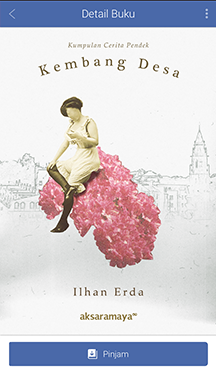 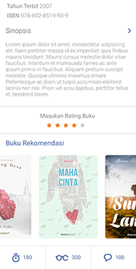
Untuk mendapatkan detail dari suatu buku, pilih salah satu cover buku yang ingin anda lihat detailnya. Setelah itu akan muncul detail informasi, yaitu judul buku, pengarang buku, ISBN, penerbit, tanggal terbit, rating buku, dan harga buku, synopsis, Want List (List yang menginginkan buku tersebut), is Read (yang sedang membaca buku tersebut), has Read (yang selesai membaca buku tersebut), review.
Share
Share merupakan fitur untuk berbagi info tentang detail sebuah buku. User dapat membagikan info detail buku lewat facebook, twitter, email, dan recommend.
Share Recommend
Share recommend digunakan untuk membagikan informasi buku dengan cara mengirimkan ke notifikasi user yang sudah memfollow dan di follow oleh anda.
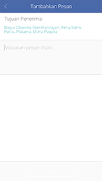
Follow/Unfollow
Follow digunakan untuk mengikuti dan mendapatkan informasi terbaru dari user lain, ePustaka, Author. Caranya bagaimana ?
Silakan masuk ke user profile yang terdiri dari informasi user (username, status badges, deskripsi, want list, list follower, list following, dan list reading serta tombol follow. Nah, tombol follow inilah yang digunakan untuk memfollow user lain.
Shelf
Shelf merupakan kumpulan koleksi buku yang sudah dimiliki (current), koleksi yang diinginkan (want), serta koleksi yang sudah selesai dibaca(history).
- Current merupakan koleksi buku yang sudah dimiliki dengan cara buy , rent maupun borrow. Pada Current, user dapat menghapus koleksi buku yang mungkin sudah tidak ingin dibaca lagi, cukup mudah untuk melakukan penghapusan koleksi buku dengan menggunakan tombol info yang ada di halaman current
- Want merupakan koleksi buku yang diinginkan oleh user tetapi belum melakukan buy, rent ataupun borrow.
- History merupakan koleksi buku yang sudah selesai dibaca dengan persentase book finish 100%. Pada history, user dapat juga menghapus koleksi buku-buku yang sudah selesai dibaca tersebut.
eReader
eReader merupakan fitur baca buku yang dilengkapi dengan TOC (Table Of Content), Change Font Style, Change Font Type, Line Spasing, Change Theme, Bookmark, Search.
- TOC (Table Of Content)
Table Of Content merupakan Daftar Isi dari sebuah buku, berikut tampilannya :
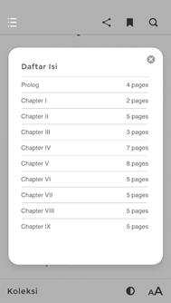
- Bookmark
Bookmark merupakan suatu penanda pada buku, digunakan untuk menandai suatu halaman pada buku sehingga memudahkan dalam membuka halaman tersebut ketika ingin membaca kembali. Cukup mudah mengenali halaman mana yang sudah ditandai.
Dalam tampilan diatas, terlihat sekali perbedaan ketika buku di bookmark dan belum di bookmark.
- Change Style
Change Style merupakan fitur untuk merubah font style, Font Size, Line Spasing.
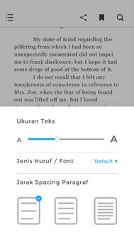
- Change Theme
Change Theme merupakan fitur untuk merubah theme background , brightnes.
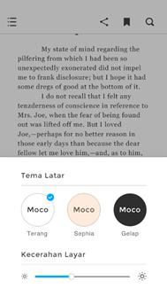
Untuk thema background ada 3 macam jenis thema yaitu white, sephia, night.
- Search
Search
digunakan untuk mencari kata. Klik tombol search( ) yang ada di sebelah kanan atas.
Ketikkan kata kunci yang akan di cari. Text yang sesuai dengan kata kunci yang
di masukkan akan terblok dengan warna merah muda.
) yang ada di sebelah kanan atas.
Ketikkan kata kunci yang akan di cari. Text yang sesuai dengan kata kunci yang
di masukkan akan terblok dengan warna merah muda.
- Memo
memo digunakan untuk menandai kata - kata yang penting dalam buku. Blok kata - kata yang penting, klik kanan di area yang di blok. Akan keluar pilihan, yaitu memo dan share. Klik memo maka kata - kata tersebut telah masuk ke dalam memo.
- Share Facebook
Share Text dalam reader digunakan untuk membagikan kata - kata yang ada di dalam buku. text dapat dibagikan melalui 4 media, yaitu melalui Facebook, twitter, Link In, dan Email. Blok kata yang akan dibagikan. Klik kanan pada kata yang di blok. Klik salah satu media untuk membagikan kata tersebut. Akan muncul halaman browser yang berisikan kata - kata yang telah di blok tadi.
Feeds
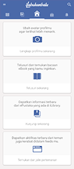
Feed merupakan kumpulan informasi yang bersifat public (umum). Informasi yang termasuk kedalam feed adalah:
- Followers menambahkan buku
- Followers join ePustaka
- Perubahan Status Badges User
- Buku-buku baru yang ditambahkan di ePustaka yang diikuti
- Pemberitahuan dari admin iLabuhanbatu
Author Profile
Author Profile merupakan halaman author yang berisi profile singkat, tanggal lahir, umur serta buku-buku yang ditulis oleh penulis. Pada author page disediakan juga tombol follow sehingga user bisa langsung berinteraksi dengan penulis buku.
User Profile
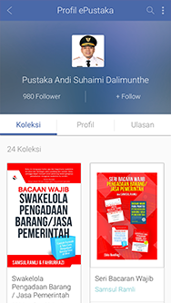
User Profile merupakan halaman user yang berisi profile singkat, status badges (level baca), Kota Tinggal, Want List, List Read, List Followers, Following. Pada user profile disediakan juga tombol follow sehingga user bisa berinteraksi dengan user lain.
Note
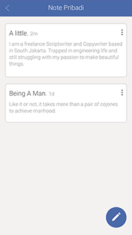
Note digunakan untuk menyimpan catatan.
iLabuhanbatu Offline
Aplikasi iLabuhanbatu ini selain dipergunakan dalam kondisi terkoneksi dengan akses internet atau Online, iLabuhanbatu ini bisa digunakan dalam keadaan tanpa koneksi internet atau offline akan tetapi ada batasan akses saat iLabuhanbatu tidak mendapatkan akses internet, adapun iLabuhanbatu bisa digunakan hanya sebatas membaca buku dengan ketentuan sebagai berikut :
- Sudah masuk dalam ke iLabuhanbatu ketika masih menggunakan iLabuhanbatu
- Sudah mendownload atau mengunduh buku.